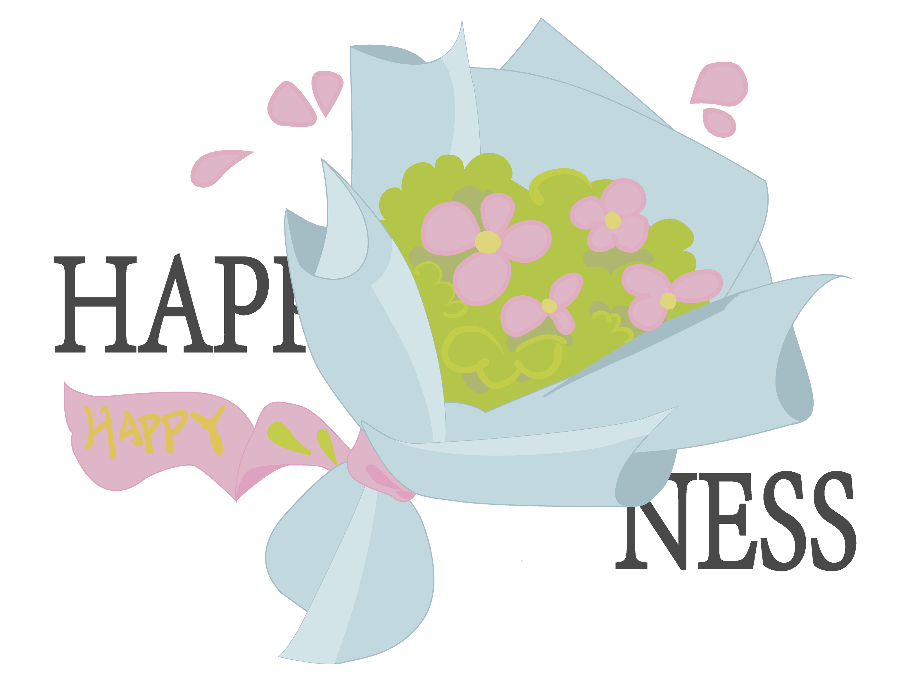

今年2月，B站up主全嘻嘻一个题为《北大宿舍聊天×上野千鹤子|只要自由地活着怎么样都可以》的视频，再次将婚育话题推上热搜。而从“王宝钏挖野菜”，《消失的她》热播到“许沁的白粥”，似乎只要与恋爱、结婚、生子相关的话题必然引起人们的热议。
“男大当婚、女大当嫁”“养儿防老”一直都是深植于中国传统中人们对于婚育的观念，但是近年来，越来越多的年轻人步入了“不婚不育”的大军
像刘璐这样的例子不在少数，随着生活与工作压力的增大，女性权益越来越多得到保障，许许多多的年轻人对于结婚与生育表示并不在未来规划之中。
婚育现状步入冷局
我国是世界上老年人口规模最大的国家，至2022年末，我国60岁以上人口为28004万人，站全国总人口的19.8%。
随着老龄化严重，我国面临着劳动力减少的困难，给经济的持续发展带来了严重挑战。由此看来“结与不结，生或不生”已经不再是一家一户的个体问题，而成为了承担社会责任的重要体现。
那么我国的婚育情况到底是怎样的呢？
自2013年我国结婚登记数达到最高值1346.9万对后的9年时间以来， 我国结婚登记数量一直呈急剧下降趋势，而离婚登记数量却呈现稳定上涨趋势，至19年疫情爆发的影响，才使得离婚登记数量开始逐渐减少。
无独有偶，结婚局面低迷的同时，生育现状也走入冰点。
从16年开始，我国的出生率呈现出急剧下降的趋势，死亡率却一直平稳上升。至2022年我国首次出现人口负增长，而这样严峻的形式可能将会持续较长一段时间。
伴随着婚育情况走入冷局的是越来越多年轻人的婚育观走入抵触婚育的死胡同。

从多子多福到不婚不育
说道结婚，就要先从年轻人的恋爱现状谈起，“智者不入爱河，寡王一路硕博”成为了年轻人们经常挂在嘴边的话语。这个时代，似乎只有清醒搞事业才是人生目标，而恋爱成为了追求幸福路上的一大阻碍。更有甚者，对于恋爱不止于不想谈、不愿谈，而是升级到对于恋爱本身的批判之上，对于所谓的“恋爱脑”进行全方位攻击。
据后浪研究所发起的年轻人恋爱观调查显示，在接受调研的2801人中，直接拒绝与摇摆不定的人比值接近，仅有13.0%的人愿意承认自己就是恋爱脑。
人们对于恋爱脑的极度抵制伴随着现在的年轻人对于恋爱与结婚意愿的无限降低。
2021年，中国人民大学开启的中国大学生的婚育观研究调查了全国22个省份、共9975个大学生的婚育观，发现超过四成的大学生不想恋爱，约一半的大学生表示自己的结婚意愿不确定，并且受访大学生的理想结婚年龄为27.46岁，显著高于当前的平均初婚年龄，晚婚现状显现。
关于生育，《人口与健康》调查了共1343位20—39岁的育龄青年发现，大部分调查对象的理想初次生育年龄集中在25—29岁，同时，约有8.2%的调查对象表示没有生育打算或不确定是否要生育。

可见，随着时间的推移，人们的婚育观念已经从“多子多福”走向了“不婚不育”。
选择 “升” 还是 “生”
造成婚育观念发生差异的原因除了社会经济的发展以外还有什么呢？
时间成本高
- “我太忙了，忙得没有时间去认识新的人，忙着工作上班。”
- “每天都是996，哪里有什么时间精力。”
- “忙起来根本没时间，生了小孩后都没时间陪孩子。”
- “早上八点出门，晚上11点才回家，孩子只能丢给阿姨”
- “现在那么卷，我研究生毕业在工作两年都27了，怎么可能早结婚嘛。”
时间成本过高，成为了现在的年轻人不想恋爱结婚的一大因素。过高的时间成本首先就体现在我国教育年限的时长以及社会压力增大上。
随着社会用人条件的增高，越来越多的公司大厂都要求研究生学历起步。根据智联招聘发布的《2023年大学生就业力调研报告》显示 无论是在offer的进展或者是获取上，硕博学历都更优于本科与专科学历。
并且双一流硕士相比于本科及普本硕士在offer获得的可能性上有着明显优势。所以目前许多大学生毕业之后并不会选择成家立业，而是为了获得更宽的发展道路选择继续深造。
根据研招网官方统计，2023年研究生报考人数为474万，同比增长17万，约占2023年高校毕业生人数的40%。

而在中国传统思想观念中，一位学生的主要任务就是学习。这就使得虽然研究生已经步入了可以婚育的年龄阶段，但是其“学生”身份让大众难以接受研究生期间步入婚姻殿堂。并且研究生期间时间紧、科研任务重、社交圈进一步缩小等问题也让研究生们对于爱情只能想想。
除去了教育时间过长所带来的晚婚晚育问题，当年轻人步入社会之后，工作时间成本的增加又成为了阻碍结婚生育的因素之一。
CEIC所发布的中国每周平均工作时间显示从2022年8月至2023年7月的9个月时间内，中国人周平均工作时间从48.000小时增加到48.700小时，平均每天需要工作9.74个小时。（按照5天工作日计算）
根据《中国睡眠报告（2022）》指出，我国平均每天睡眠时长为7.06个小时，那么每天的剩余时间就是7.20小时，这还不包括洗漱，休闲，娱乐的时间。并且生育后，面临需要抽空照顾小孩的情况，会让本就稀少的空闲时间更加压缩。
越来越少的空闲时间，越来越普遍的“快餐式恋爱”“周末夫妻”，让不少的人对于爱情、婚姻的失去了原有的向往，对于生育更是避之不及。
经济压力大
“没车贷，没房贷，没有下一代”，经济压力是阻碍年轻人进入婚育阶段的又一重要原因。
根据国家统计局给出的数据可以看出，从2021年至2022年，我国城镇人居可支配收入增率下降，与此同时我国平均工资增率也急剧下降。
而近年来，虽然房价走势有所稳定但是作为结婚的刚需，一套房车仍要100万左右，彩礼10万，婚前准备3万，婚宴6万，那么一对新人从情侣变成夫妻需要120万。（在此还没有包含各地风俗习惯及蜜月旅游和房屋装修等费用）
据数据统计，养育一个孩子0——17岁的成本大约为485218；而后还有四年大学的学习费用，一般说来公立大学的学费随专业的不同而有所不同，一般为每学年5000-8000元，个别专业（例如艺术、音乐表演等专业)）每学年8000到10000元。 民办大学的学费一般为每学年1.2万-2万元。住宿费每学年800-2000元左右。
公立大学和民办大学平均每学年学费按1万元计算，住宿费按每年1500元计算，生活费按每月2000元计算，则大学本科期间每年的养育成本为：10000+1500+24000=35500元，四年共142000元。
如此从结婚到生育直至养育一个小孩成年，需要花费1827218元，约200万。
按照2022年全国城镇人均可支配收入为4.93万元，一对有着稳定工作的情侣一年平均工资总和为9.86万元，加以其它收入计为10万元，那么也需要不吃不喝12年才能结婚。养育一个孩子更是需要20年。
如此巨大的经济压力以及经济环境的萎靡让越来越多的年轻人拒绝婚育。
其他因素
阻碍婚姻的远不止经济与时间成本的高昂，还有着许多的个体与社会因素，首先随着我国教育水平的提高，越来越多的年轻人将追求自我发展放在首位。
除此之外，经济文化的发展，使得越来越多的女性突破了传统观念中“男主外、女主内”的桎梏，“她力量”觉醒，走上职场。家庭与社会的双重压力让生育之路越来越窄。
而在调查中显示，女性在职场遭遇不公的占比高达九成以上，接近职场男性的两倍。对于造成职场性别不平等的原因，大多数女性倾向于归因生育。半数以上的女性认为“生育是女性摆脱不掉的负担。”“升”还是“生”成为了职场女性不得不面对的问题。
这也使得职场女性与男性的生育意愿出现较大差距，大多男性愿意生育甚至愿意生2至3个孩子，而女性则不准备生育，近4成女性只愿意生育一胎。
“生孩子会对身体造成什么伤害”也是了大多数女性考虑生育时的重要问题。虽然随着医学技术的发展，孕妇死亡率越来越低，但是短视频传播时代，网上越来越多的关于“想要生孩子，那你要吃这些苦”的视频造成恐慌。而生育需要承受的痛苦却是实实在在的存在，这让很多女性从不想生育转变到不敢生育。
种种因素，加以社会对于晚婚晚育、不婚不育的包容度越来越强，更多的人在面临生育问题时不同于以前“总归都要结婚生子”的想法，而是更加的犹豫踌躇。
社会压力、心理抗拒等因素把当代年轻人与婚姻的距离拉得越来越远，而在婚育市场冷清的同时，另一新兴经济形式逐渐壮大起来，那便是由单身队伍聚集而兴起的“单身经济”。
不婚观念下的自由与局促
个人生活的姿彩
此前民政部数据显示，2023年我国单身成年人口高达2.3亿人，约为英国、法国、德国人口总和。其中超过7700万名成年人处于独居状态。单身人群构成了一个独特且庞大的消费群体。
根据智研瞻产业研究院的数据预测，预计到2029年我国单身经济市场将突破30.17万亿元。除此之外，单身经济中“悦己型”消费尤为明显。通过尼尔森的《中国单身经济报告》，我们发现42%的单身消费者为悦己而消费，远高于非单身消费者。
对于未来一年的时间规划方面，“22%的单身消费者期望去读书，18%的单身消费者希望学习新技能，17%的单身消费者希望培养自己的兴趣爱好，均高于非单身消费者的13%、11%和14%。
由此我们可以看到，“不婚不育”“晚婚晚育”成为大多数年轻人的选择之时，单身群体的膨胀使得新的经济机遇被挖掘。
人们不再拘泥于家庭的物质消费以及被传统“节约”观念所束缚，而是将消费重心放到自身以及长期发展领域，这使得年轻人的生活越来越丰富多彩，走向个性化，但是与此同时，身处娱乐的浪潮之中，也让更多的年轻人与婚育越来越远。
虽然单身经济的兴起能够暂时的掩盖住婚育走向谷底所带来的一系列问题， 但是随着时间的推进，中国的社会问题日渐显露，劳动力缺口日渐扩大。
社会人口问题的暴露
1990-2017年女性平均初育年龄从24.1岁推迟至26.8岁，平均生育年龄（所有孩次）从24.8岁推迟至28.7岁。初育年龄每推迟一个月，大概会影响总和生育率下降8%左右。
生育年龄的推迟，使得新生儿出生率遭到一定影响，劳动力缺口也将慢慢显露。生产率下降、经济增速放缓等情况将如链式反应般随之而来。
在产业影响当中，母婴产业首当其冲，受众规模与产品市场的萎缩预示着该行业的低迷走向。其他产业也无法独善其身，产业规模缩小与失业人口上升等问题可能成为社会共同面临的难题。
除此之外，老龄化问题也十分严重。
中国正逐渐成为世界上养老负担最重的国家之一。从2012年到2022年我国老年抚养比从12.7%升高至21.8%，增长接近10%，平均每100名劳动年龄人口10年间需多负担10名老人的抚养。
老年人口比重上升，人们对养老服务需求也随之增加。然而，目前我国的养老服务体系还不够完善，无法满足日益增长的养老服务需求。面临人口结构变化，社会保障制度有能否承担压力？能否保障社会结构平稳过渡？这都是未来可能面临的挑战。
总之，生育率低迷将对我国未来的劳动力、养老问题产生重大影响，我们需要采取相应的措施来应对这些问题，从不同的方面推动生育率尽快迎来“拐点”。
国家政府的“婚育率保卫战”
婚恋场上的变化与未来走向，引起了政府的高度关注。 近些年，国家逐渐出台一系列的政策优惠，以及相关基础设施的建设，从多方位提供良好的生育环境，以减轻年轻人对婚育的后顾之忧，促长婚育意愿。
自2013年始，农村地区的计划生育政策就已放松。在夫妇双方为独生子女、第一个孩子身体有残疾或特殊情况等特殊条件下，政府允许该夫妇养育第二个孩子。到了2015年，国家出台了 “二胎”政策，2021年甚至加大力度到“三胎”政策。

从上图中我们可以发现，国家的优惠政策实现了多方位和多阶段覆盖。 但是面临现行婚育现状，婚育鼓励政策未能止步，仍然有长远道路要走。

我不是不婚主义者，我是幸福主义者
国家政府站在瞭望塔的高度，以全局观念发布了一系列的改善措施。但互联网舆论似乎建立起一面与之相抗的屏障。 在这里，“婚育”更像是一个张牙舞爪的鬼怪，使恐婚心理广泛蔓延。
数据来源：统计b站、抖音关于《北大宿舍聊天×上野千鹤子|只要自由地活着怎么样都可以》的评论
在全嘻嘻和上野千鹤子对话的视频下方，网友们掀起一场激烈的讨论，大多看起来义愤填膺，浓浓的火药味蔓布评论区。
其中，讨论量最大的话题是“女性主义”，其次便是“女性”和“结婚”。而在情绪分布中，“无语”、“伤害”、“束缚”等词反映出网友们对这次对话不满的情绪。还有少部分网友尖锐地指出视频呈现一种“精致利己”的价值导向，对此大加批判。
这样的舆论氛围远不止局限在B站平台，几乎全网的社交媒体上充斥着“婚姻全罪”的氛围。
我们爬取了豆瓣小组关于婚育话题的讨论数据，发现大家对于婚姻的态度依旧消极。“童年阴影”、“害怕”、“恐惧”等词登上高频榜，态度倾向从“既试而退”到“望而生畏”。对婚姻的恶评像波浪一般在互联网的海滩上翻滚，在舆论机制的狂风助推之下，吞噬着年轻人对婚姻的期待。
而处在这个人人都有发言权的互联网媒体漩涡之中，我们应当时刻警醒自己“沉默螺旋”的存在。网络上的声浪巨大，并不代表事实必然如此。算法机制所催生的信息茧房也容易以一叶蔽人之目，遮挡了更广泛更真实的情况。
若单看互联网上的言论，我们可能会对婚姻丧失所有信心，但在现实生活中，也有像徐沁这样在婚育中感知幸福，收获满足感与成就感的群体。因此，我们应当冷静辩证地看待被妖魔化的婚姻，切不可人云亦云。
婚姻是人们的生活状态，是可观可感的情绪来源，不可置否地影响人们对生活的感受与评价。但婚姻不等于生活的全部，也不能够完全与幸福画上等号。它是人生环节中出现的一个角色，可能喜怒无常，让人烦躁不安；也可能温柔贴心，在面临生活挑战时予以慰藉。
“不婚”实际上并不是固执地对婚姻的排斥，它流露出的是现代年轻人在网络、周遭等各种压力下对幸福安稳生活的不确定。拒绝婚姻更像是现代年轻人规避风险的一条途径，是在寻求幸福之路上精打细算的规划之举，恰恰体现了年轻人对“幸福主义”的追求。
这条路上或许困难重重，但一定风景无限。在遇到那个Ta时，擦亮眼睛，用心观察，或许你们拼凑在一起，才能得到最终通往幸福宝藏的地图。祝愿每一个人都能找到适合自己的生活方式，从多元的“婚姻主义”中跳脱出来，走向“幸福主义”。
参考资料：
- 李婷,郑叶昕,闫誉腾.中国的婚姻和生育去制度化了吗?——基于中国大学生婚育观调查的发现与讨论[J].妇女研究论丛,2022,No.171(03):85-102.
- 育蜗人口研究.《中国生育成本报告2022版》
- 智联招聘.《2023年中国女性职场现状调查报告》
- 尼尔森《中国单身经济报告》